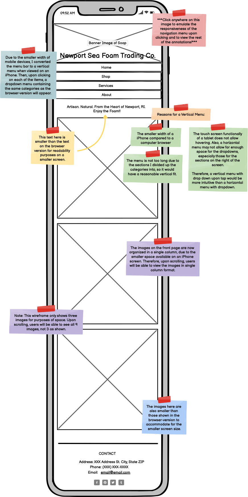
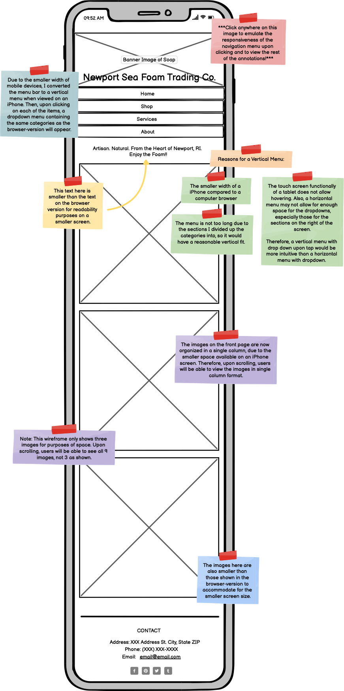
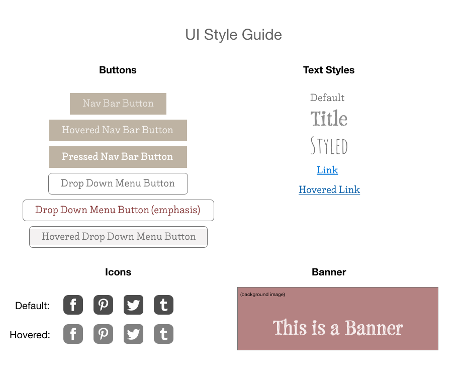

Responsive Redesign
Introduction
 This is a project for CS1300: User Interface and Experience at Brown University, in which I redesign an existing webpage based on usability standards. I will analyze and identify flaws in an existing interface, create low-fidelity and high-fidelity prototypes for various screen sizes, and build a responsive website based on those prototypes.
This is a project for CS1300: User Interface and Experience at Brown University, in which I redesign an existing webpage based on usability standards. I will analyze and identify flaws in an existing interface, create low-fidelity and high-fidelity prototypes for various screen sizes, and build a responsive website based on those prototypes.
I have chosen to redesign the home page of a local Rhode Island soap business: Newport Sea Foam Trading Co. A screen shot of the homeage is shown.
Identifying Problems
I analyzed the usability of the website using the criteria we learned about in class: usability, learnability, and memorabilty. My findings are shown here:| Usability | Learnability | Memorability |
|---|---|---|
Disorganization
|
Unclear Navigation
|
Lack of Visual Distinction
|
Readability
|
Lack of Clarity
|
Lack of Spatial Distinction
|
Convenience
|
Accessibility Findings
WebAIM WAVE: When I inserted the website into WebAIM WAVE, the main alerts that were found involved the images that are displayed on the home page. The images have suspicious alternative text, and when I checked what the alternative text was, I found that the alt text was not very informative. They were all the same, with the words “Newport Sea Foam Trading Co”, except differentiated with an image number. This may provide accessibility issues, as people using screen readers would not be able to understand what the image is specifically showing.
Testing on a Screenreader: I used VoiceOver on Mac to test how it interacts with the site, and it was consistent with the problems I found on WebAIM Wave, which was that the alternative text was not very descriptive. Therefore, it is confusing what the images are showing.
Low-Fidelity Prototypes
Click on each of the devices to view the full-sized lo-fi prototype on different devices (desktop, tablet, and mobile, respectively)

 

High-Fidelity Prototypes
Click on each of the device screenshots to view the full-sized hi-fi prototype on different devices (desktop, tablet, and mobile, respectively)


Style Guide
Responsive Redesign
Click here or anywhere on the screenshot below to view the redesigned site!

Testing for Responsiveness:
- I used Developer Tools to test what the site looks like on other devices as well as different screen sizes, and it seems that the design is indeed responsive. It is still able to be used across different devices.
- I changed the font size on my Mac to see what the site would look like, and the site is still usable with large as well as smaller font sizes.
- I tested the redesigned site on WebAIM Wave, and it seems that the design is indeed more accessible. Compared to the original, which threw many errors for suspicious alt text, the alt text for the images on the new site were listed as features. The only errors I got were included empty links, which is to be expected for this assignment.